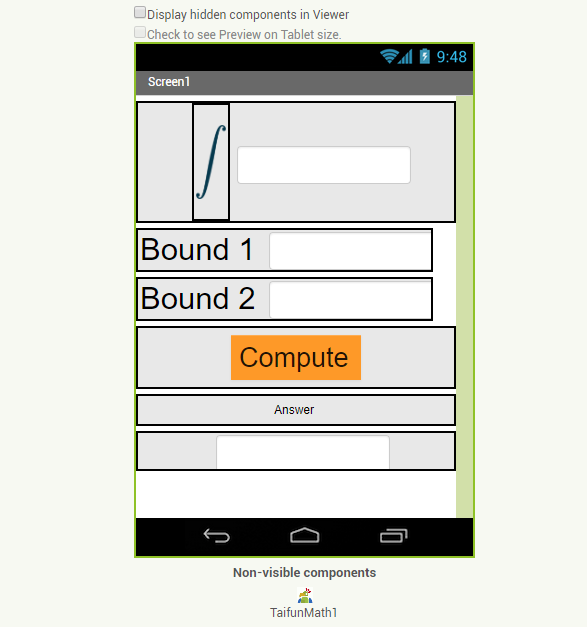
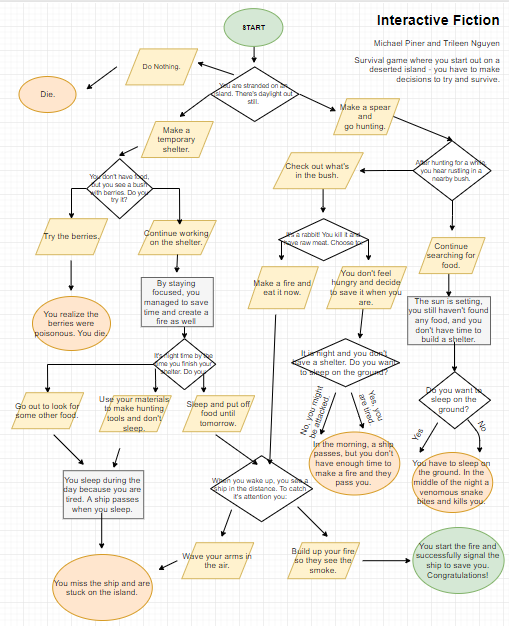
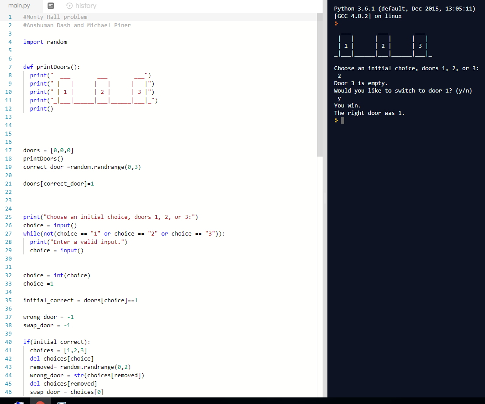
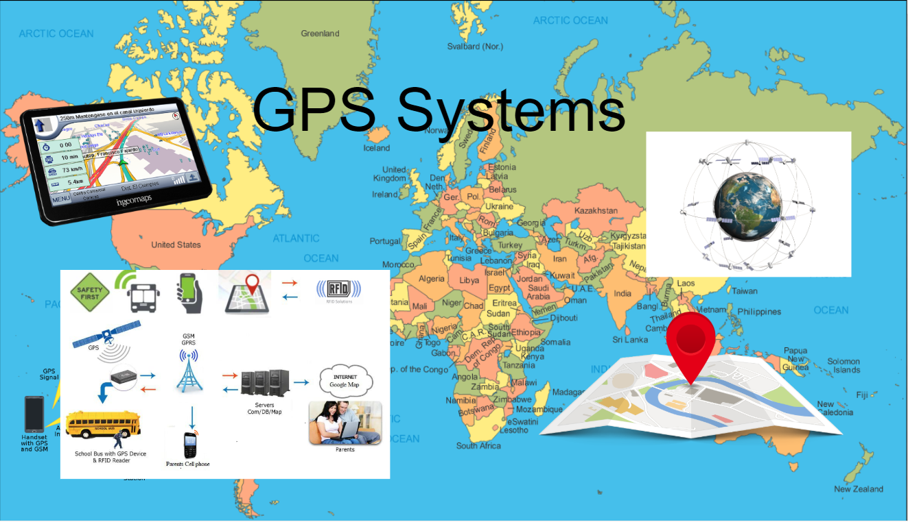
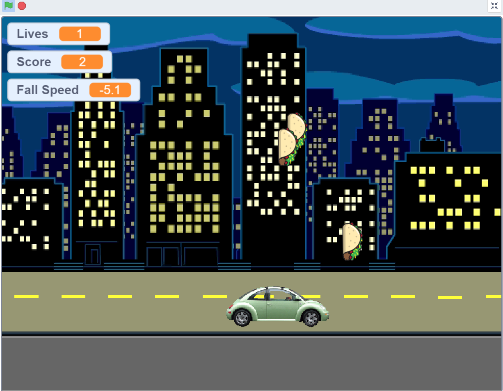
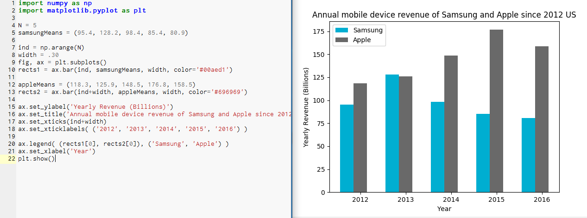
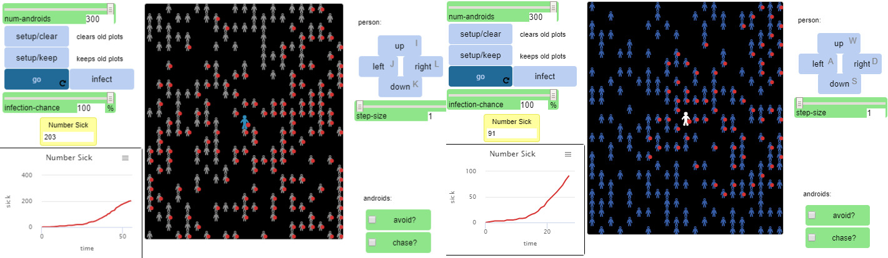

Home
Portfolio
About Me
This is my Portfolio Page!

Our project is a working integral calculator that could
potentially be sold if it showed the steps of the calculations.

This is the first game i've ever made on Scratch, I only used basic coding because I was still learning.
This is a flowchart for my survival game.

This is a Monty Hall game that I made. Interestingly, if you decide to change your door,
you are more likely to pick the right one.

This is my computational artifact for GPS systems.

Here is a Scratch game I made where your main objective is to dodge the raining tacos.

Which company has the highest annual mobile phone revenue?

This is my remix of a netlogo model. I changed the controls (IJKL to WASD), colors of the androids, and color of the player.
